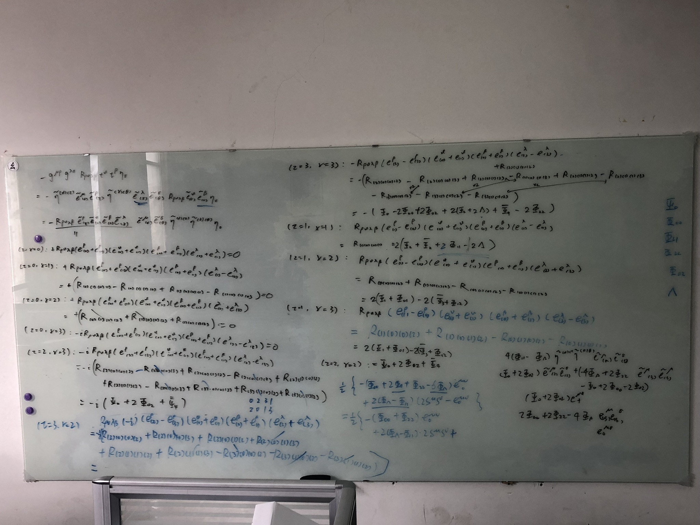
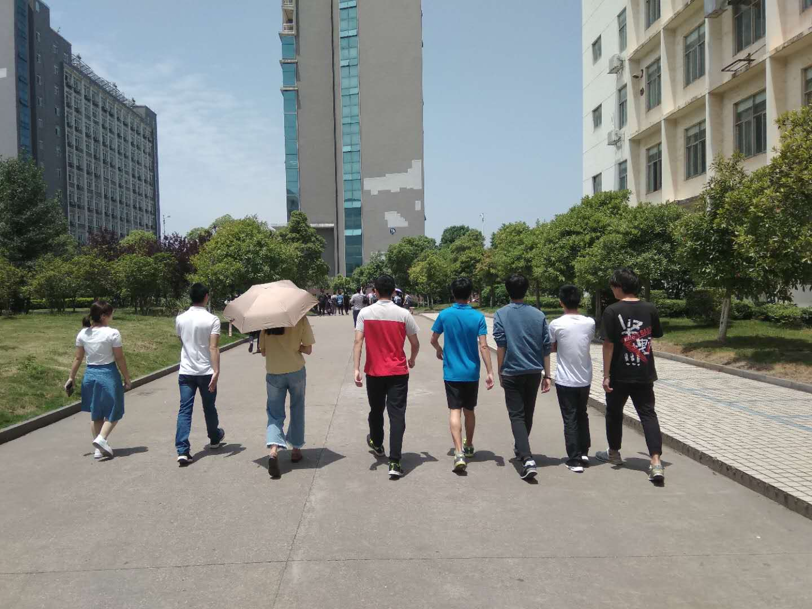

南昌大学
南昌大学位于江西省南昌市。我所在的研究室地处前湖校区，是相对比较新的校区，研究室只有一间不大的房间，经过重新购置桌子后，最多能容纳12个人，但显得非常拥挤，除此之外还配有一间会议室，供平时开组会和上课用。我也是从这里开启我的物理研究之路。

↑↑↑ 平时就在研究室的玻璃白（？）板上讨论
由于校区处在郊区，没有地铁经过，所以平时的娱乐乏善可陈。但对于室内派的我来说，每天学习和做研究就是最大的乐趣。放松的时间，大概只有中午研究室的人们结伴去食堂，颇为"声势浩大"。只是没想到后来在日本的研究组，也有同样的传统，也许在吃饭这一件事上，有种打破国界的力量（笑）

↑↑↑ 疑似路霸行为？？